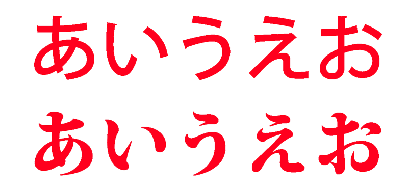
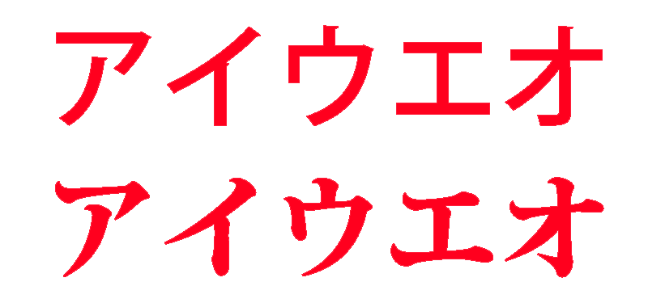
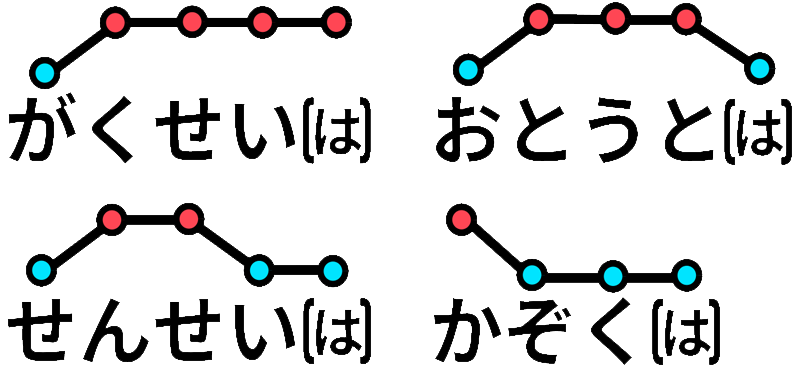

Welcome to Your Japanese Journey!
Learning Japanese is a long-term commitment, and it starts with understanding the basics. This guide gives you an overview on each of the essential components of Japanese that you will need to build your foundation. Think of this as the prologue to your journey!
Hiragana
The first writing system you'll learn — essential for reading, writing, and building a strong foundation in Japanese.
Katakana
A second writing system, mainly used for foreign words, names, and emphasis in Japanese.
Kanji
Characters that convey meaning, different from Hiragana or Katakana, which represent sounds.
Pitch Accent
The subtle rise and fall in your voice that can change the meaning of words — key for natural pronunciation.
What's Next?
Now that you're fully initiated, you can continue your Journey on your own! From here, the best thing you can do is start using the language as much as possible. One highly recommended textbook for beginners is Genki, which offers structured lessons, dialogues, and practice exercises to help you develop your grammar, vocabulary, and communication skills.
Beyond textbooks, immersion is key. Try surrounding yourself with Japanese through music, TV shows, podcasts, simple books, and even social media. Listening, reading, and eventually speaking a little every day will build your understanding naturally over time. It's okay if you don't catch everything — the important thing is to keep exposing yourself to the language and to stay curious.
Finally, remember that learning Japanese is a long journey. Progress may feel slow at times, but every new word you understand or sentence you can write is a real achievement. Keep practicing, stay patient, and enjoy the process. You've already built a strong beginning — now it's time to see how far you can go!